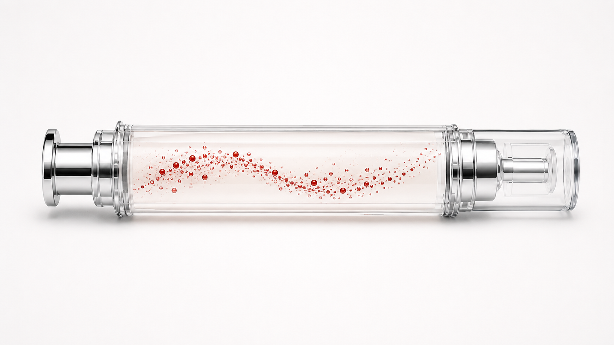

Des produits finis premium formulés sur une base AcquaSea®.
Nous pouvons développer et fabriquer pour des tiers des produits cosmétiques finis dans lesquels AcquaSea® peut représenter jusqu’à 95 % de la formule. À partir de cette base premium, nous intégrons des actifs complémentaires afin d’orienter la formule vers une application précise et de proposer un produit différenciant, hautement efficace et prêt à être personnalisé.
Un format premium, de multiples applications
Notre proposition repose sur une base riche en AcquaSea® — pouvant atteindre jusqu’à 95 % du produit final — complétée par des actifs additionnels pour renforcer le bénéfice cosmétique recherché.

Nous disposons de produits déjà formulés et pouvons également adapter la proposition à l’identité de votre marque, au claim recherché et au format final.
Les formulations sont déjà développées. Si vous souhaitez découvrir les concepts disponibles, recevoir davantage d’informations techniques ou demander des échantillons, nous serons ravis de vous accompagner.
Une solution clé en main pour les marques cosmétiques.
Notre modèle couvre l’ensemble du parcours : depuis une base premium optimisée autour d’AcquaSea® jusqu’à la fabrication sous la marque du client, l’adaptation de la texture et du parfum, la sélection du packaging, la documentation réglementaire et le changement d’échelle industriel.
Mettez sur le marché une proposition différenciante et hautement efficace.
Nous pouvons partir de produits déjà formulés ou développer une version adaptée à votre marque tout en conservant AcquaSea® comme actif principal.